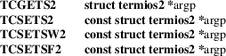
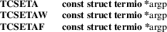
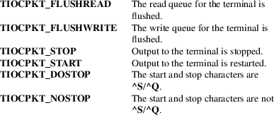
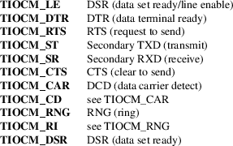

ioctl_tty − ioctls for terminals and serial lines
Standard C library (libc, −lc)
#include
<sys/ioctl.h>
#include <asm/termbits.h> /* Definition of
struct termios,
struct termios2, and
Bnnn, BOTHER, CBAUD, CLOCAL,
TC*{FLUSH,ON,OFF} and other
constants */
int ioctl(int fd, int cmd, ...);
The ioctl(2) call for terminals and serial ports accepts many possible command arguments. Most require a third argument, of varying type, here called argp or arg.
Use of ioctl() makes for nonportable programs. Use the POSIX interface described in termios(3) whenever possible.
Please note that struct termios from <asm/termbits.h> is different and incompatible with struct termios from <termios.h>. These ioctl calls require struct termios from <asm/termbits.h>.
Get and set terminal attributes
|
TCGETS |
Argument: struct termios *argp |
Equivalent to tcgetattr(fd, argp).
Get the current serial port settings.
|
TCSETS |
Argument: const struct termios *argp |
Equivalent to tcsetattr(fd, TCSANOW, argp).
Set the current serial port settings.
TCSETSW
Argument: const struct termios *argp
Equivalent to tcsetattr(fd, TCSADRAIN, argp).
Allow the output buffer to drain, and set the current serial port settings.
TCSETSF
Argument: const struct termios *argp
Equivalent to tcsetattr(fd, TCSAFLUSH, argp).
Allow the output buffer to drain, discard pending input, and set the current serial port settings.
The following four ioctls, added in Linux 2.6.20, are just like TCGETS, TCSETS, TCSETSW, TCSETSF, except that they take a struct termios2 * instead of a struct termios *. If the structure member c_cflag contains the flag BOTHER, then the baud rate is stored in the structure members c_ispeed and c_ospeed as integer values. These ioctls are not supported on all architectures.

The following four ioctls are just like TCGETS, TCSETS, TCSETSW, TCSETSF, except that they take a struct termio * instead of a struct termios *.

Locking the
termios structure
The termios structure of a terminal can be locked.
The lock is itself a termios structure, with nonzero
bits or fields indicating a locked value.
TIOCGLCKTRMIOS
Argument: struct termios *argp
Gets the locking status of the termios structure of the terminal.
TIOCSLCKTRMIOS
Argument: const struct termios *argp
Sets the locking status of the termios structure of the terminal. Only a process with the CAP_SYS_ADMIN capability can do this.
Get and set
window size
Window sizes are kept in the kernel, but not used by the
kernel (except in the case of virtual consoles, where the
kernel will update the window size when the size of the
virtual console changes, for example, by loading a new
font).
TIOCGWINSZ
Argument: struct winsize *argp
Get window size.
TIOCSWINSZ
Argument: const struct winsize *argp
Set window size.
The struct used by these ioctls is defined as
struct winsize
{
unsigned short ws_row;
unsigned short ws_col;
unsigned short ws_xpixel; /* unused */
unsigned short ws_ypixel; /* unused */
};
When the window size changes, a SIGWINCH signal is sent to the foreground process group.
Sending a break
|
TCSBRK |
Argument: int arg |
Equivalent to tcsendbreak(fd, arg).
If the terminal is using asynchronous serial data transmission, and arg is zero, then send a break (a stream of zero bits) for between 0.25 and 0.5 seconds. If the terminal is not using asynchronous serial data transmission, then either a break is sent, or the function returns without doing anything. When arg is nonzero, nobody knows what will happen.
(SVr4, UnixWare, Solaris, and Linux treat tcsendbreak(fd,arg) with nonzero arg like tcdrain(fd). SunOS treats arg as a multiplier, and sends a stream of bits arg times as long as done for zero arg. DG/UX and AIX treat arg (when nonzero) as a time interval measured in milliseconds. HP-UX ignores arg.)
TCSBRKP
Argument: int arg
So-called "POSIX version" of TCSBRK. It treats nonzero arg as a time interval measured in deciseconds, and does nothing when the driver does not support breaks.
TIOCSBRK
Argument: void
Turn break on, that is, start sending zero bits.
TIOCCBRK
Argument: void
Turn break off, that is, stop sending zero bits.
Software flow control
|
TCXONC |
Argument: int arg |
Equivalent to tcflow(fd, arg).
See tcflow(3) for the argument values TCOOFF, TCOON, TCIOFF, TCION.
Buffer count
and flushing
FIONREAD
Argument: int *argp
Get the number of bytes in the input buffer.
TIOCINQ
Argument: int *argp
Same as FIONREAD.
TIOCOUTQ
Argument: int *argp
Get the number of bytes in the output buffer.
|
TCFLSH |
Argument: int arg |
Equivalent to tcflush(fd, arg).
See tcflush(3) for the argument values TCIFLUSH, TCOFLUSH, TCIOFLUSH.
TIOCSERGETLSR
Argument: int *argp
Get line status register. Status register has TIOCSER_TEMT bit set when output buffer is empty and also hardware transmitter is physically empty.
Does not have to be supported by all serial tty drivers.
tcdrain(3) does not wait and returns immediately when TIOCSER_TEMT bit is set.
Faking input
TIOCSTI
Argument: const char *argp
Insert the given byte in the input queue.
Redirecting
console output
TIOCCONS
Argument: void
Redirect output that would have gone to /dev/console or /dev/tty0 to the given terminal. If that was a pseudoterminal master, send it to the slave. Before Linux 2.6.10, anybody can do this as long as the output was not redirected yet; since Linux 2.6.10, only a process with the CAP_SYS_ADMIN capability may do this. If output was redirected already, then EBUSY is returned, but redirection can be stopped by using this ioctl with fd pointing at /dev/console or /dev/tty0.
Controlling
terminal
TIOCSCTTY
Argument: int arg
Make the given terminal the controlling terminal of the calling process. The calling process must be a session leader and not have a controlling terminal already. For this case, arg should be specified as zero.
If this terminal is already the controlling terminal of a different session group, then the ioctl fails with EPERM, unless the caller has the CAP_SYS_ADMIN capability and arg equals 1, in which case the terminal is stolen, and all processes that had it as controlling terminal lose it.
TIOCNOTTY
Argument: void
If the given terminal was the controlling terminal of the calling process, give up this controlling terminal. If the process was session leader, then send SIGHUP and SIGCONT to the foreground process group and all processes in the current session lose their controlling terminal.
Process
group and session ID
TIOCGPGRP
Argument: pid_t *argp
When successful, equivalent to *argp = tcgetpgrp(fd).
Get the process group ID of the foreground process group on this terminal.
TIOCSPGRP
Argument: const pid_t *argp
Equivalent to tcsetpgrp(fd, *argp).
Set the foreground process group ID of this terminal.
TIOCGSID
Argument: pid_t *argp
When successful, equivalent to *argp = tcgetsid(fd).
Get the session ID of the given terminal. This fails with the error ENOTTY if the terminal is not a master pseudoterminal and not our controlling terminal. Strange.
Exclusive
mode
TIOCEXCL
Argument: void
Put the terminal into exclusive mode. No further open(2) operations on the terminal are permitted. (They fail with EBUSY, except for a process with the CAP_SYS_ADMIN capability.)
TIOCGEXCL
Argument: int *argp
(since Linux 3.8) If the terminal is currently in exclusive mode, place a nonzero value in the location pointed to by argp; otherwise, place zero in *argp.
TIOCNXCL
Argument: void
Disable exclusive mode.
Line
discipline
TIOCGETD
Argument: int *argp
Get the line discipline of the terminal.
TIOCSETD
Argument: const int *argp
Set the line discipline of the terminal.
Pseudoterminal
ioctls
TIOCPKT
Argument: const int *argp
Enable (when *argp is nonzero) or disable packet mode. Can be applied to the master side of a pseudoterminal only (and will return ENOTTY otherwise). In packet mode, each subsequent read(2) will return a packet that either contains a single nonzero control byte, or has a single byte containing zero ('\0') followed by data written on the slave side of the pseudoterminal. If the first byte is not TIOCPKT_DATA (0), it is an OR of one or more of the following bits:

While packet mode is in use, the presence of control status information to be read from the master side may be detected by a select(2) for exceptional conditions or a poll(2) for the POLLPRI event.
This mode is used by rlogin(1) and rlogind(8) to implement a remote-echoed, locally ^S/^Q flow-controlled remote login.
TIOCGPKT
Argument: const int *argp
(since Linux 3.8) Return the current packet mode setting in the integer pointed to by argp.
TIOCSPTLCK
Argument: int *argp
Set (if *argp is nonzero) or remove (if *argp is zero) the lock on the pseudoterminal slave device. (See also unlockpt(3).)
TIOCGPTLCK
Argument: int *argp
(since Linux 3.8) Place the current lock state of the pseudoterminal slave device in the location pointed to by argp.
TIOCGPTPEER
Argument: int flags
(since Linux 4.13) Given a file descriptor in fd that refers to a pseudoterminal master, open (with the given open(2)-style flags) and return a new file descriptor that refers to the peer pseudoterminal slave device. This operation can be performed regardless of whether the pathname of the slave device is accessible through the calling process’s mount namespace.
Security-conscious programs interacting with namespaces may wish to use this operation rather than open(2) with the pathname returned by ptsname(3), and similar library functions that have insecure APIs. (For example, confusion can occur in some cases using ptsname(3) with a pathname where a devpts filesystem has been mounted in a different mount namespace.)
The BSD ioctls TIOCSTOP, TIOCSTART, TIOCUCNTL, and TIOCREMOTE have not been implemented under Linux.
Modem
control
TIOCMGET
Argument: int *argp
Get the status of modem bits.
TIOCMSET
Argument: const int *argp
Set the status of modem bits.
TIOCMBIC
Argument: const int *argp
Clear the indicated modem bits.
TIOCMBIS
Argument: const int *argp
Set the indicated modem bits.
The following bits are used by the above ioctls:

TIOCMIWAIT
Argument: int arg
Wait for any of the 4 modem bits (DCD, RI, DSR, CTS) to change. The bits of interest are specified as a bit mask in arg, by ORing together any of the bit values, TIOCM_RNG, TIOCM_DSR, TIOCM_CD, and TIOCM_CTS. The caller should use TIOCGICOUNT to see which bit has changed.
TIOCGICOUNT
Argument: struct serial_icounter_struct *argp
Get counts of input serial line interrupts (DCD, RI, DSR, CTS). The counts are written to the serial_icounter_struct structure pointed to by argp.
Note: both 1->0 and 0->1 transitions are counted, except for RI, where only 0->1 transitions are counted.
Marking a
line as local
TIOCGSOFTCAR
Argument: int *argp
("Get software carrier flag") Get the status of the CLOCAL flag in the c_cflag field of the termios structure.
TIOCSSOFTCAR
Argument: const int *argp
("Set software carrier flag") Set the CLOCAL flag in the termios structure when *argp is nonzero, and clear it otherwise.
If the CLOCAL flag for a line is off, the hardware carrier detect (DCD) signal is significant, and an open(2) of the corresponding terminal will block until DCD is asserted, unless the O_NONBLOCK flag is given. If CLOCAL is set, the line behaves as if DCD is always asserted. The software carrier flag is usually turned on for local devices, and is off for lines with modems.
Linux-specific
For the TIOCLINUX ioctl, see
ioctl_console(2).
Kernel
debugging
#include <linux/tty.h>
TIOCTTYGSTRUCT
Argument: struct tty_struct *argp
Get the tty_struct corresponding to fd. This command was removed in Linux 2.5.67.
The ioctl(2) system call returns 0 on success. On error, it returns −1 and sets errno to indicate the error.
|
EINVAL |
Invalid command parameter. |
ENOIOCTLCMD
Unknown command.
|
ENOTTY |
Inappropriate fd. |
|||
|
EPERM |
Insufficient permission. |
Check the condition of DTR on the serial port.
#include
<fcntl.h>
#include <stdio.h>
#include <sys/ioctl.h>
#include <unistd.h>
int
main(void)
{
int fd, serial;
fd =
open("/dev/ttyS0", O_RDONLY);
ioctl(fd, TIOCMGET, &serial);
if (serial & TIOCM_DTR)
puts("TIOCM_DTR is set");
else
puts("TIOCM_DTR is not set");
close(fd);
}
Get or set arbitrary baudrate on the serial port.
/* SPDX-License-Identifier: GPL-2.0-or-later */
#include
<asm/termbits.h>
#include <fcntl.h>
#include <stdio.h>
#include <stdlib.h>
#include <sys/ioctl.h>
#include <unistd.h>
int
main(int argc, char *argv[])
{
#if !defined BOTHER
fprintf(stderr, "BOTHER is unsupported\n");
/* Program may fallback to TCGETS/TCSETS with Bnnn constants
*/
exit(EXIT_FAILURE);
#else
/* Declare tio structure, its type depends on supported
ioctl */
# if defined TCGETS2
struct termios2 tio;
# else
struct termios tio;
# endif
int fd, rc;
if (argc != 2
&& argc != 3 && argc != 4) {
fprintf(stderr, "Usage: %s device [output [input]
]\n", argv[0]);
exit(EXIT_FAILURE);
}
fd =
open(argv[1], O_RDWR | O_NONBLOCK | O_NOCTTY);
if (fd < 0) {
perror("open");
exit(EXIT_FAILURE);
}
/* Get the
current serial port settings via supported ioctl */
# if defined TCGETS2
rc = ioctl(fd, TCGETS2, &tio);
# else
rc = ioctl(fd, TCGETS, &tio);
# endif
if (rc) {
perror("TCGETS");
close(fd);
exit(EXIT_FAILURE);
}
/* Change baud
rate when more arguments were provided */
if (argc == 3 || argc == 4) {
/* Clear the current output baud rate and fill a new value
*/
tio.c_cflag &= ~CBAUD;
tio.c_cflag |= BOTHER;
tio.c_ospeed = atoi(argv[2]);
/* Clear the
current input baud rate and fill a new value */
tio.c_cflag &= ~(CBAUD << IBSHIFT);
tio.c_cflag |= BOTHER << IBSHIFT;
/* When 4th argument is not provided reuse output baud rate
*/
tio.c_ispeed = (argc == 4) ? atoi(argv[3]) :
atoi(argv[2]);
/* Set new
serial port settings via supported ioctl */
# if defined TCSETS2
rc = ioctl(fd, TCSETS2, &tio);
# else
rc = ioctl(fd, TCSETS, &tio);
# endif
if (rc) {
perror("TCSETS");
close(fd);
exit(EXIT_FAILURE);
}
/* And get new
values which were really configured */
# if defined TCGETS2
rc = ioctl(fd, TCGETS2, &tio);
# else
rc = ioctl(fd, TCGETS, &tio);
# endif
if (rc) {
perror("TCGETS");
close(fd);
exit(EXIT_FAILURE);
}
}
close(fd);
printf("output
baud rate: %u\n", tio.c_ospeed);
printf("input baud rate: %u\n", tio.c_ispeed);
exit(EXIT_SUCCESS);
#endif
}
ldattach(8), ioctl(2), ioctl_console(2), termios(3), pty(7)